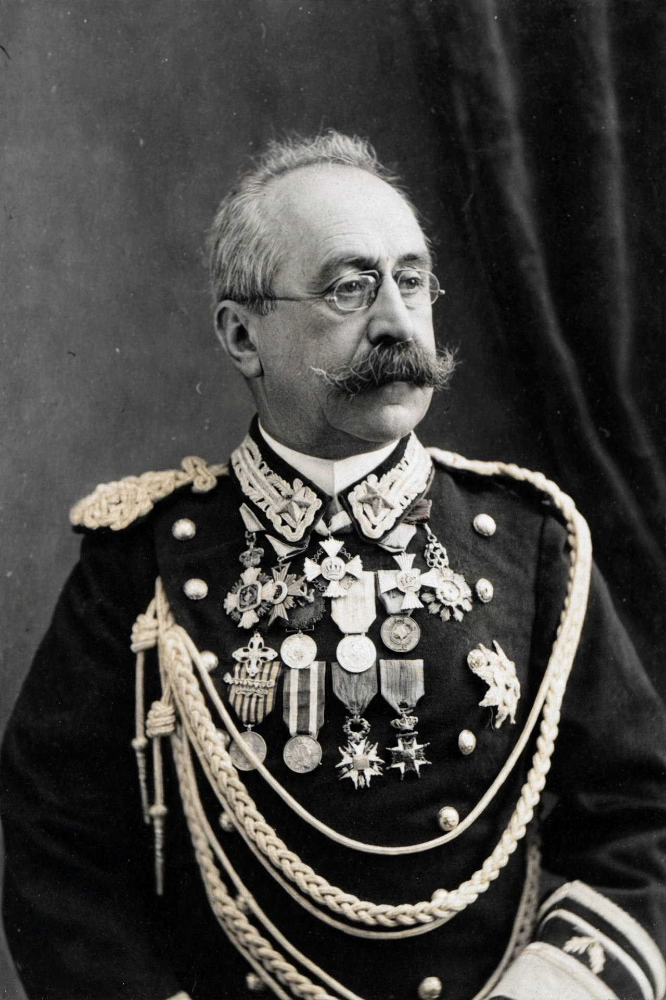

| Oreste Baratieri | |
|---|---|
 | |
| Born | 13 November 1841 Condino, Austrian Empire (now Italy) |
| Died | 7 August 1901 (aged 59) Sterzing, Austria-Hungary |
| Allegiance | Kingdom of Italy |
| Service | Governor of Eritrea and commander-in-chief, 1892–1896 |
| Battles | First Italo-Ethiopian War; Battle of Adwa (1896) |
Oreste Baratieri (13 November 1841 – 7 August 1901) was an Italian general and colonial governor, commander of Italian forces in the First Italo-Ethiopian War. His catastrophic defeat by Emperor Menelik II at the Battle of Adwa in 1896 ended his career and brought down the government of Francesco Crispi.
Born in the Italian-speaking Trentino, then under Austrian rule, Baratieri volunteered with Garibaldi's Redshirts in the Expedition of the Thousand (1860) before joining the Royal Italian Army. He served in the colonial campaigns in Eritrea from 1887 and became governor of the colony and commander-in-chief in 1892.
After Menelik abrogated the Treaty of Wuchale, Baratieri advanced into Tigray, winning initial successes at Coatit and Senafe (1895) and occupying Adigrat and Mekelle. But his army was short of supplies, his maps were defective, and Rome alternately pressed him to advance and denied him reinforcements. Pressured by Crispi's taunting telegrams and facing starvation, he ordered a night advance on Adwa on 29 February 1896. His four brigades became separated in mountainous terrain and were destroyed piecemeal on 1 March; roughly 7,000 Italian and Eritrean troops were killed — the worst defeat of a European colonial army in Africa.
Baratieri was court-martialled at Asmara; though acquitted of criminal charges, he was condemned for his generalship and retired in disgrace. He published his memoirs (Memorie d'Africa) in self-defence and died in Sterzing in 1901.
Treaty of Wuchale · Treaty of Addis Ababa (1896) · Battle of Adwa